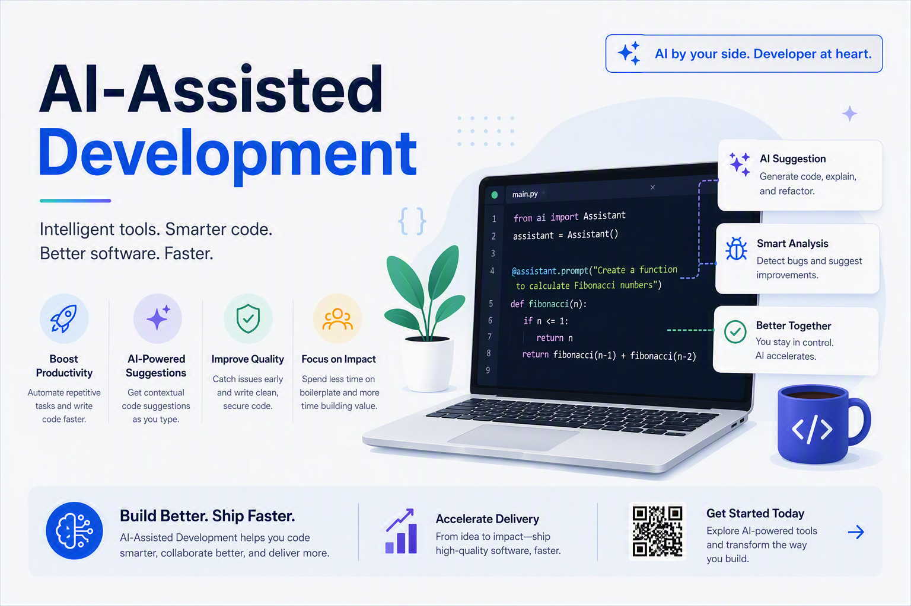

Objective
In this lab you will take one small feature from idea to operational handoff. Along the way, you will practice the use cases from the AI-Assisted Engineering poster: accelerate coding, improve code quality, boost test coverage, document automatically, modernize and migrate, and keep relevant knowledge at hand.

Each exercise has the same rhythm: ask clearly, provide context, inspect the result, verify it, and decide what happens next.
Prerequisites
- VS Code with the GitHub Copilot extension enabled and an active Copilot plan.
- Git installed and a small repository you can safely change. A disposable sample project is ideal.
- A runtime and test command for your project, such as
npm test,dotnet test, orpytest. - Basic familiarity with your language, repository structure, and version control.
The AI-Assisted Workflow
or problem"] --> P["1. Plan"] --> C["2. Code"] --> T["3. Test"] --> R["4. Review"] --> D["5. Deploy"] --> O["6. Operate"] R -.->|"learn + refine"| P O -.->|"signals + feedback"| P
AI can assist at every stage; human judgment closes every loop.
Accelerate
Generate boilerplate, functions, modules, and implementation options faster.
Improve
Catch defects, explain unfamiliar code, and refactor with confidence.
Learn
Ask questions about libraries, APIs, patterns, and the codebase in front of you.
Plan: Turn an Idea into an Executable Slice
1.1 Ask for a plan
Choose a small feature such as a GET /health endpoint, a password-strength validator, or a notification preference. Open Copilot Chat in the repository and ask:
We need to add a GET /health endpoint to this application.
First inspect the repository. Then propose a small implementation plan.
Include: files to change, response shape, tests, observability, and risks.
Do not edit files yet. Keep the plan to 8 bullets or fewer.Notice how the request sets scope, sequence, output shape, and a no-edit boundary. Ask follow-up questions until the plan matches the real requirement.
1.2 Apply the human checkpoint
Compare the plan with the repository and your team's conventions. Check that it identifies the right entry point, test location, and runtime behavior. Edit the plan yourself if needed, then explicitly approve only the slice you understand.
Can you explain what will change, how you will test it, and what could go wrong? If not, improve the context or narrow the request before generating code.
Code: Generate, Inspect, Iterate
2.1 Generate the feature
Give Copilot the approved slice and point it to the relevant files. Ask it to reuse a nearby pattern rather than inventing an architecture:
Implement the approved health endpoint.
Follow the routing, response, and error-handling patterns in the nearest existing endpoint.
Add the smallest matching test. Do not change unrelated files.
After editing, summarize the files changed and the verification command.Review the diff as it arrives. Look for accidental scope expansion, invented dependencies, missing validation, and code that does not match the local style.
2.2 Iterate with evidence
Use focused follow-ups instead of asking for a complete rewrite:
Run the focused test for this endpoint. If it fails, explain the failure before changing code.
Then add the missing assertion for the response status and content type.State the goal, relevant context, constraints, and proof you expect. “Make it better” is a direction; “return 200 with JSON and test the contract” is a checkable task.
Test: Boost Coverage Without Outsourcing Judgment
3.1 Generate a test matrix
Ask Copilot to identify behavior before writing tests:
For the health endpoint, list the happy path, failure paths, boundary cases,
and operational checks worth testing. Map each case to a test name.
Use the existing test framework and do not write tests yet.Now ask it to implement only the agreed cases. Run the test suite yourself and inspect whether assertions prove behavior rather than implementation details.
3.2 Find gaps
Review the tests for the health endpoint and the surrounding module.
Identify untested behavior and weak assertions. Rank the gaps by risk.
Do not change files. Include the exact test you would add for the highest-risk gap.Coverage is a signal, not proof. A generated test can pass while asserting the wrong thing. Read the test, break the behavior intentionally, and confirm the test fails for the right reason.
Review: Catch Bugs, Security Risks, and Weak Assumptions
4.1 Review the diff
Ask for a review with explicit criteria and a severity convention:
Review the current diff for correctness, maintainability, performance, and scope.
Prioritize findings as critical, high, medium, or low.
For every finding include: file, behavior, why it matters, and a minimal fix.
If you find no issue, say what you checked and what remains unverified.Use the review to create a short decision log: accepted findings, rejected suggestions, and follow-up work.
4.2 Add a security lens
Perform a focused security review of this change.
Check input handling, authorization, sensitive data exposure, dependency use,
logging, error messages, and denial-of-service risks.
Do not invent vulnerabilities. Cite the code path for each finding.Document: Make Knowledge Available at the Moment of Need
5.1 Document automatically
Have Copilot draft documentation from verified behavior, then compare it with the implementation:
Using the implementation and tests as the source of truth, draft:
1. an API example for the README,
2. a concise code comment only where the behavior is non-obvious,
3. a release-note entry.
Do not claim behavior that is not demonstrated by the code or tests.Documentation is useful when it answers the next developer's question. Remove generated filler and keep examples executable where possible.
5.2 Build a local knowledge path
Ask questions about the repository instead of searching from memory:
Where is authentication configured in this repository?
Trace the request from entry point to authorization check.
List the files I should read first and explain each file's role in one sentence.
Do not edit anything.Capture stable answers in the repository's existing documentation or instructions. Keep the knowledge close to the code, current, and small enough to remain useful.
Modernize: Change Structure Without Losing Behavior
6.1 Modernize a small module
Choose a safe example such as replacing a deprecated API, extracting a route handler, or updating a test pattern. Start with behavior preservation:
Inspect this module and its tests. Identify one low-risk modernization that
improves maintainability without changing the public behavior.
Show the before/after design, affected callers, and verification plan.
Do not edit files yet.After approval, ask for the smallest edit and run regression tests. Modernization is a sequence of verified changes, not a single “upgrade everything” prompt.
6.2 Plan a migration
For a framework or dependency migration, use Copilot as a researcher and planner:
Analyze this repository for a migration from the current framework version to the target.
Inventory breaking changes, dependencies, configuration, tests, and rollback risks.
Separate facts found in this codebase from assumptions requiring confirmation.
Return a staged plan with a validation gate after each stage. Do not edit files.Deploy & Operate: Ship Better, Learn Faster
7.1 Check deployment readiness
Review this change as a deployment readiness checklist.
Check configuration, health probes, logging, error handling, tests, secrets,
rollback steps, and documentation. Mark each item ready, missing, or unknown.
Use evidence from the repository and name the command that would verify it.Turn unknowns into explicit tasks. A useful assistant makes missing evidence visible before a release.
7.2 Design operational signals
For this feature, propose the minimum useful operational signals:
logs, metrics, traces, health checks, and alerts. For each, state the signal,
its expected value, and the action an operator should take when it changes.
Keep the proposal proportional to this feature.Prefer signals tied to user impact and recovery actions. Do not add telemetry that captures sensitive data or creates noise without an owner.
Best Practices
| Practice | Do this | Why it helps |
|---|---|---|
| Be specific | State goal, constraints, files, and output shape. | Reduces guesswork and rework. |
| Provide context | Share the relevant code, docs, tests, and acceptance criteria. | Improves relevance without dumping the whole repository. |
| Iterate and refine | Use small, evidence-based follow-ups. | Keeps changes understandable and reversible. |
| Review always | Read diffs, run tests, and challenge assumptions. | Preserves human accountability. |
| Keep learning | Ask why a solution works, not only what to paste. | Builds durable engineering judgment. |
| Protect your data | Use trusted tools and follow policy. | Reduces security, privacy, and compliance risk. |
Challenges & Guardrails
Verify syntax, behavior, dependencies, and edge cases. A plausible answer is not evidence.
Use approved tools, sanitize context, scan changes, and avoid secrets or sensitive data.
Keep building understanding. You should be able to explain and maintain the code you accept.
Choose the smallest useful context and tool set. Track whether automation improves outcomes.
Recap & Next Steps
You practiced a complete AI-assisted loop:
- Plan from intent before editing.
- Generate a small, local change.
- Test behavior and find coverage gaps.
- Review correctness, security, and scope.
- Document verified behavior and keep knowledge close to the code.
- Modernize and prepare for deployment with staged validation.
Repeat this lab on a real low-risk backlog item. Measure cycle time, escaped defects, test quality, and developer understanding, not just generated lines of code.